library(latex2exp)
library(dplyr)
library(ggplot2)
library(tidyr)
library(tibble)
library(purrr)
library(brms)
library(tidybayes)Bayesian Statistics in R
statistics
frequentism
bayes theorem
Intro
This is a follow-up from our “Intro to Bayesian Statistics” article. Still, we do have numerous important concepts in order to understand what the computational codes are doing behind scenes when running a Bayesian analysis.
📌 Today’s Topics
We’ll learn how to compute posterior distributions, step-by-step:
- 🎯 Acceptance/Rejection Sampling (AR Sampling)
- 🔁 Markov Chain Monte Carlo (MCMC) — more efficient than AR!
And introduce powerful R packages for Bayesian modeling:
- 📦
brms— beginner-friendly interface to Stan - 🔬
rstan— write your own Stan models - 🧪
rjags— Gibbs sampling with BUGS syntax
1 📦 Packages we’ll use today
2 🎲 Computing Posterior Distributions
2.1 1️⃣ Acceptance/Rejection Sampling — Basics
Here’s how AR sampling works:
- Propose values for parameters
- Simulate data based on those values
- Measure how well it fits the observed data
- Accept if close enough (✔️), reject otherwise (❌)
2.1.1 🌽 Simulating Corn Yield vs. Plant Density
We simulate yield using a parabolic function:
\[ y = \beta_0 + x \cdot \beta_1 - x^2 \cdot \beta_2 \]
Then compare simulated data to the real observed values. If the “fit” is good enough, we keep those parameter values.
👀 We’ll visualize which parameter sets are accepted and which aren’t!
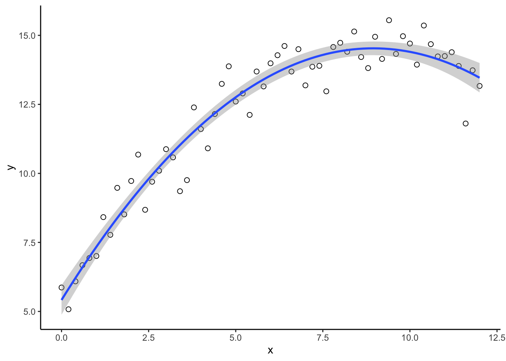
\[ y = \beta_0 + x \cdot \beta_1 - x^2 \cdot \beta_2\]
- Generate proposal parameter values using the prior ditributions:
\[\beta_0 \sim uniform(4, 6)\]
\[\beta_1 \sim uniform(1, 3)\]
\[\beta_2 \sim uniform(0.1, 2)\]
\[\sigma \sim Gamma(2, 2)\]
set.seed(6767)
b0_try <- runif(1, 4, 6) # Parameter model for intercept (Uniform)
b1_try <- runif(1, 1, 3) # Parameter model for slope (Uniform)
b2_try <- rgamma(1, 0.1, 2) # Parameter model for quadratic term (Gamma)
# Mathematical equation for process model
mu_try <- b0_try + x*b1_try - (x^2)*b2_try
sigma_try <- rgamma(1, 2, 2)- Generate data with those parameters
set.seed(567)
y_try <- rnorm(n, mu_try, sigma_try) # Process model- Compare the simulated data with the observed data = “difference”
# Record difference between draw of y from prior predictive distribution and
# observed data
diff[k, ] <- sum(abs(y - y_try))- “Accept” (gold) that combination of parameters if the difference < predifined acceptable error. “Reject” (red) if the difference > predifined acceptable error.
plot(x, y, xlab = "Plant density",
ylab = "Corn Yield (Mg/ha)", xlim = c(2, 13), ylim = c(5, 20),
typ = "b", cex = 0.8, pch = 20, col = rgb(0.7, 0.7, 0.7, 0.9))
points(x, y_hat[k,], typ = "b", lwd = 2,
col = ifelse(diff[1] < error, "gold", "tomato"))


Now, what if whe change the priors:
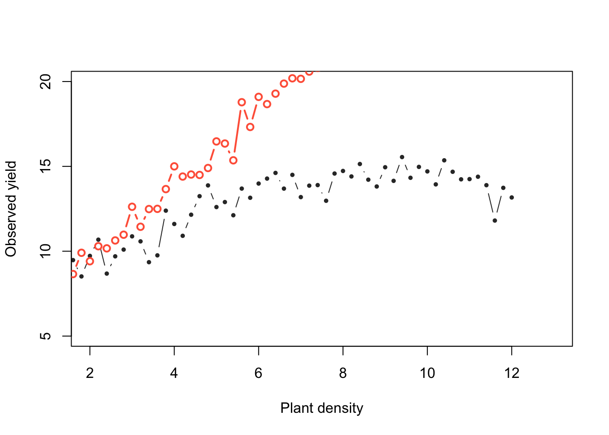
Now, do many tries
for (k in 1:K_tries) {
b0_try <- runif(1, 2, 10) # Parameter model for intercept as uniform
b1_try <- rnorm(1, 2.2, .5) # Parameter model for slope as normal or gaussian
b2_try <- rgamma(1, .25, 2) # Parameter model for quad term as gamma
# Mathematical equation for process model
mu_try <- b0_try + x*b1_try - (x^2)*b2_try
sigma_try <- rgamma(1, 2, 2)
y_try <- rnorm(n, mu_try, sigma_try) # Process model
# Record difference between draw of y from prior predictive distribution and
# observed data
diff[k, ] <- sum(abs(y - y_try))
# Save unkown random variables and parameters
y_hat[k, ] <- y_try
posterior_samp_parameters[k, ] <- c(b0_try, b1_try, b2_try, sigma_try)
}Acceptance rate
length(which(diff < error))/K_tries[1] 0.169531Priors versus posteriors:
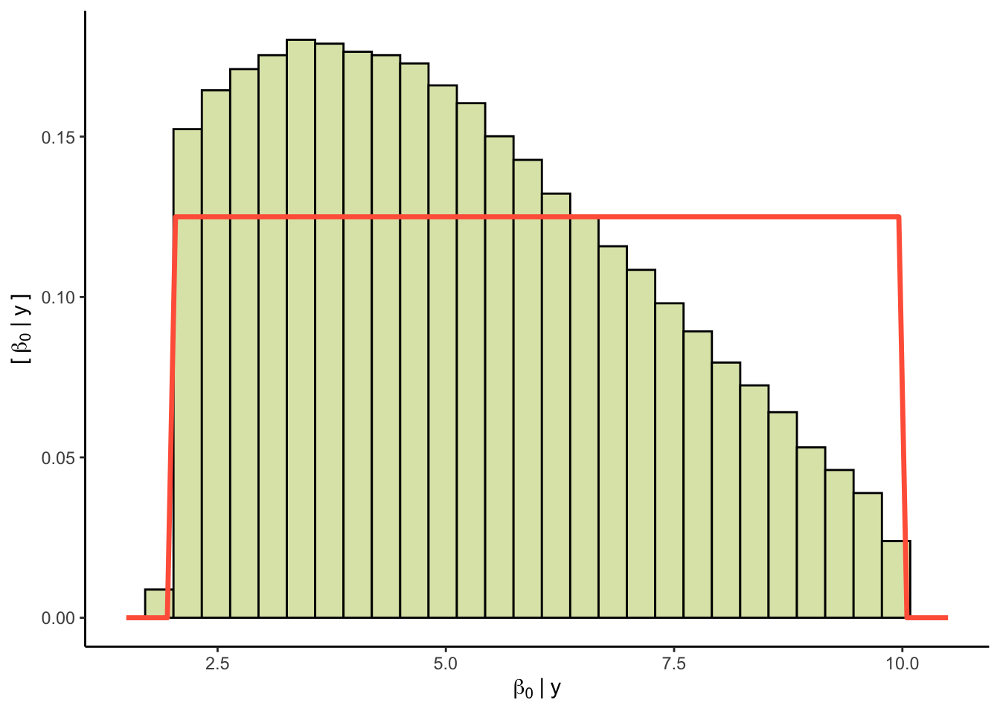
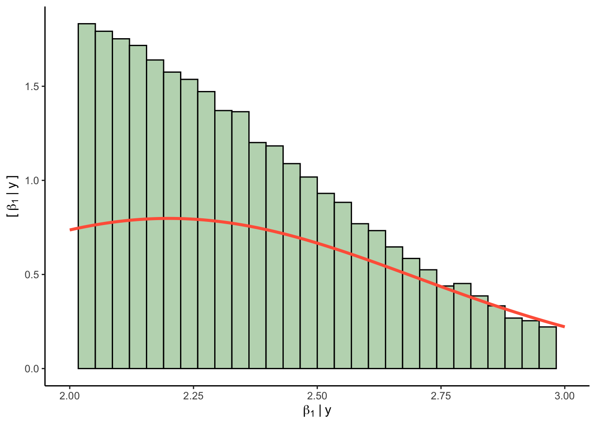
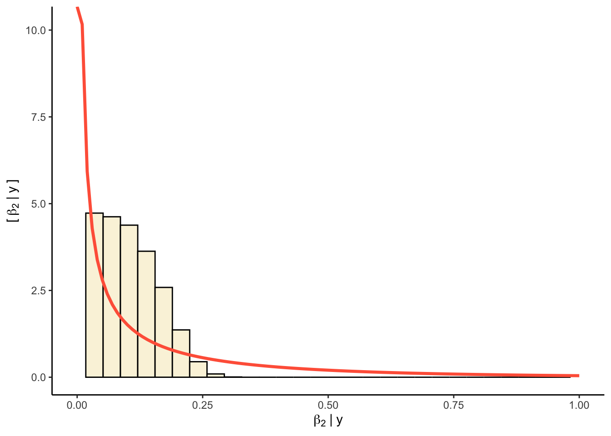
2.1.2 📊 Plot predictions
# Prepare data
filtered_yhat <- y_hat[which(diff < error), 50]
df_yhat <- data.frame(pred = filtered_yhat)
# Plot
ggplot(df_yhat, aes(x = pred)) +
# Posterior
geom_histogram(aes(y = ..density..), fill = "grey", color = "black", bins = 30) +
geom_vline(xintercept = y[50], color = "gold", linetype = "dashed", linewidth = 1.2) +
labs(
x = expression(hat(y)[50]),
y = "Density"
) +
theme_classic()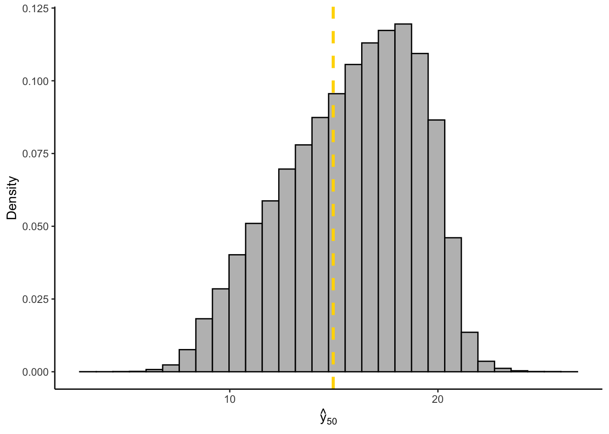
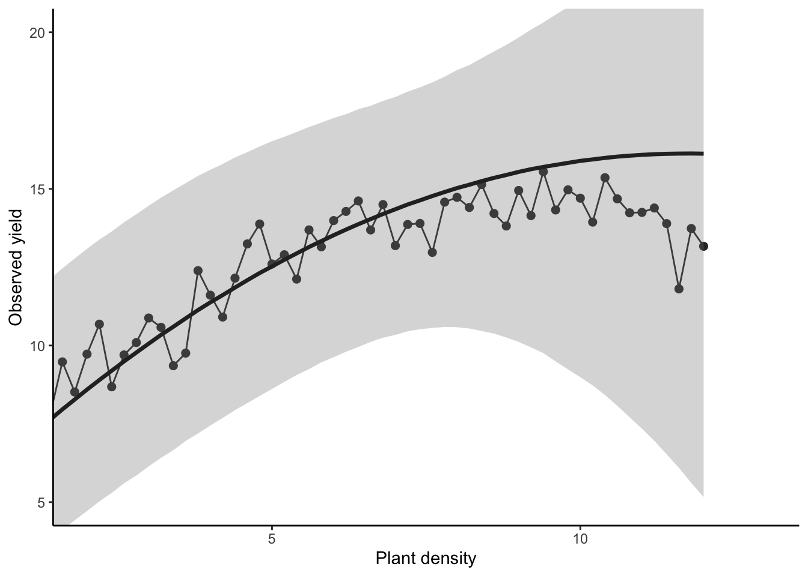
Let’s get started
3 🔁 Markov Chain Monte Carlo (MCMC)
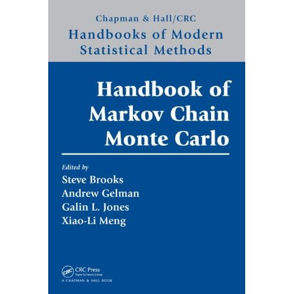
MCMC methods changed Bayesian stats forever! 🧠🔥
- They let us generate samples from complex distributions
- They form a chain, where each sample depends on the previous
- Used in packages like
brms,rstan, andrjags
📚 More info: - MCMC Handbook - MCMCpack - mcmc - Paper: Foundations of MCMC
4 brms: Bayesian Modeling Made Easy
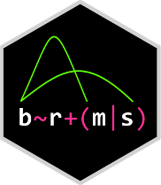
🔗 Docs: https://paul-buerkner.github.io/brms/
🐛 Issues: https://github.com/paul-buerkner/brms/issues
brms makes it easy to run complex Bayesian models — without writing Stan code manually. It’s inspired by lme4, so syntax feels familiar.
It supports a wide range of models: - Linear, GLM, survival, zero-inflated, ordinal, count, and more
✨ We’ll use brms as our go-to interface in this session!
📚 More info: - JSS Article on brms
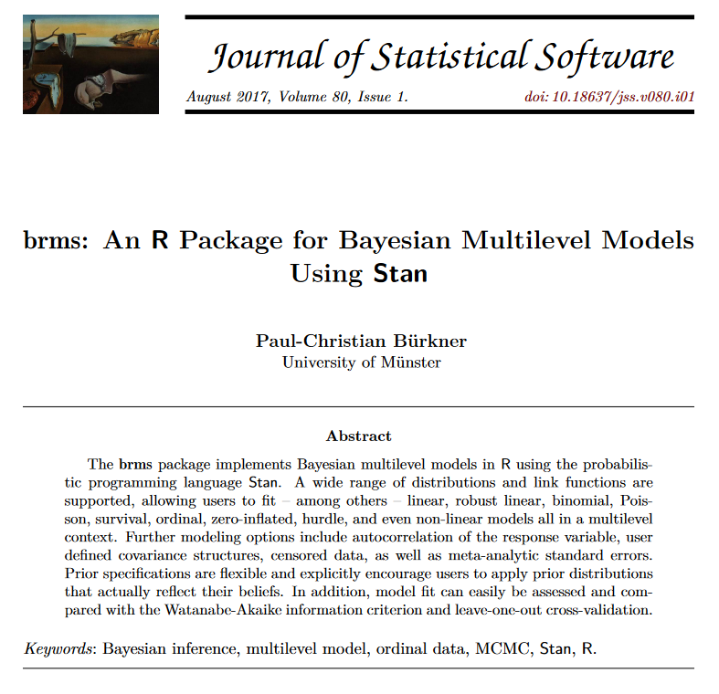
4.1 Fit brms
Let’s fit the example using the brms package.
4.2 brms pars
# Set up pars
WU = 1000
IT = 5000
TH = 5
CH = 4
AD = 0.994.3 Model
# 01. Run model
bayes_model <-
brms::brm(
#Priors
prior = c(
#B0, Intercept
prior(prior = 'normal(8, 8)', nlpar = 'B0', lb = 0),
#B1, Linear Slope
prior(prior = 'normal(2, 4)', nlpar = 'B1', lb = 0),
#B2, Quadratic coeff
prior(prior = 'normal(0.001, 0.5)', nlpar = 'B2', lb = 0) ),
# Sigma
#prior(prior = 'gamma(15,1.3)', class = "sigma") ),
# Population prior (median and sd)
# Formula
formula = bf(y ~ B0 + B1 * x - B2 * (x^2),
# Hypothesis
B0 + B1 + B2 ~ 1,
nl = TRUE),
# Data
data = data_frame, sample_prior = "yes",
# Likelihood of the data
family = gaussian(link = 'identity'),
# brms controls
control = list(adapt_delta = AD),
warmup = WU, iter = IT, thin = TH,
chains = CH, cores = CH,
init_r = 0.1, seed = 1) Running /Library/Frameworks/R.framework/Resources/bin/R CMD SHLIB foo.c
using C compiler: ‘Apple clang version 15.0.0 (clang-1500.3.9.4)’
using SDK: ‘MacOSX14.4.sdk’
clang -arch arm64 -I"/Library/Frameworks/R.framework/Resources/include" -DNDEBUG -I"/Library/Frameworks/R.framework/Versions/4.4-arm64/Resources/library/Rcpp/include/" -I"/Library/Frameworks/R.framework/Versions/4.4-arm64/Resources/library/RcppEigen/include/" -I"/Library/Frameworks/R.framework/Versions/4.4-arm64/Resources/library/RcppEigen/include/unsupported" -I"/Library/Frameworks/R.framework/Versions/4.4-arm64/Resources/library/BH/include" -I"/Library/Frameworks/R.framework/Versions/4.4-arm64/Resources/library/StanHeaders/include/src/" -I"/Library/Frameworks/R.framework/Versions/4.4-arm64/Resources/library/StanHeaders/include/" -I"/Library/Frameworks/R.framework/Versions/4.4-arm64/Resources/library/RcppParallel/include/" -I"/Library/Frameworks/R.framework/Versions/4.4-arm64/Resources/library/rstan/include" -DEIGEN_NO_DEBUG -DBOOST_DISABLE_ASSERTS -DBOOST_PENDING_INTEGER_LOG2_HPP -DSTAN_THREADS -DUSE_STANC3 -DSTRICT_R_HEADERS -DBOOST_PHOENIX_NO_VARIADIC_EXPRESSION -D_HAS_AUTO_PTR_ETC=0 -include '/Library/Frameworks/R.framework/Versions/4.4-arm64/Resources/library/StanHeaders/include/stan/math/prim/fun/Eigen.hpp' -D_REENTRANT -DRCPP_PARALLEL_USE_TBB=1 -I/opt/R/arm64/include -fPIC -falign-functions=64 -Wall -g -O2 -c foo.c -o foo.o
In file included from <built-in>:1:
In file included from /Library/Frameworks/R.framework/Versions/4.4-arm64/Resources/library/StanHeaders/include/stan/math/prim/fun/Eigen.hpp:22:
In file included from /Library/Frameworks/R.framework/Versions/4.4-arm64/Resources/library/RcppEigen/include/Eigen/Dense:1:
In file included from /Library/Frameworks/R.framework/Versions/4.4-arm64/Resources/library/RcppEigen/include/Eigen/Core:19:
/Library/Frameworks/R.framework/Versions/4.4-arm64/Resources/library/RcppEigen/include/Eigen/src/Core/util/Macros.h:679:10: fatal error: 'cmath' file not found
#include <cmath>
^~~~~~~
1 error generated.
make: *** [foo.o] Error 1# 02. Save object
# saveRDS(object = bayes_model, file = "bayes_model.RDS")
# Load from file
#bayes_model <- readRDS(file = "bayes_model.RDS")
# 03. Visual Diagnostic
plot(bayes_model)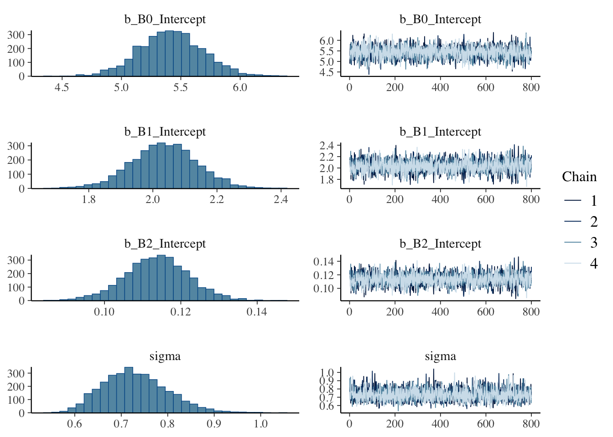
# Visualize model results
bayes_model Family: gaussian
Links: mu = identity; sigma = identity
Formula: y ~ B0 + B1 * x - B2 * (x^2)
B0 ~ 1
B1 ~ 1
B2 ~ 1
Data: data_frame (Number of observations: 61)
Draws: 4 chains, each with iter = 5000; warmup = 1000; thin = 5;
total post-warmup draws = 3200
Regression Coefficients:
Estimate Est.Error l-95% CI u-95% CI Rhat Bulk_ESS Tail_ESS
B0_Intercept 5.42 0.27 4.89 5.95 1.00 2664 2753
B1_Intercept 2.04 0.10 1.82 2.24 1.00 2719 2502
B2_Intercept 0.11 0.01 0.10 0.13 1.00 2764 2641
Further Distributional Parameters:
Estimate Est.Error l-95% CI u-95% CI Rhat Bulk_ESS Tail_ESS
sigma 0.73 0.07 0.61 0.88 1.00 2997 2715
Draws were sampled using sampling(NUTS). For each parameter, Bulk_ESS
and Tail_ESS are effective sample size measures, and Rhat is the potential
scale reduction factor on split chains (at convergence, Rhat = 1).
mpling)
Chain 4: Iteration: 1500 / 5000 [ 30%] (Sampling)
Chain 2: Iteration: 1500 / 5000 [ 30%] (Sampling)
Chain 3: Iteration: 2000 / 5000 [ 40%] (Sampling)
Chain 1: Iteration: 2000 / 5000 [ 40%] (Sampling)
Chain 2: Iteration: 2000 / 5000 [ 40%] (Sampling)
Chain 3: Iteration: 2500 / 5000 [ 50%] (Sampling)
Chain 4: Iteration: 2000 / 5000 [ 40%] (Sampling)
Chain 1: Iteration: 2500 / 5000 [ 50%] (Sampling)
Chain 3: Iteration: 3000 / 5000 [ 60%] (Sampling)
Chain 2: Iteration: 2500 / 5000 [ 50%] (Sampling)
Chain 4: Iteration: 2500 / 5000 [ 50%] (Sampling)
Chain 3: Iteration: 3500 / 5000 [ 70%] (Sampling)
Chain 1: Iteration: 3000 / 5000 [ 60%] (Sampling)
Chain 2: Iteration: 3000 / 5000 [ 60%] (Sampling)
Chain 3: Iteration: 4000 / 5000 [ 80%] (Sampling)
Chain 2: Iteration: 3500 / 5000 [ 70%] (Sampling)
Chain 1: Iteration: 3500 / 5000 [ 70%] (Sampling)
Chain 4: Iteration: 3000 / 5000 [ 60%] (Sampling)
Chain 3: Iteration: 4500 / 5000 [ 90%] (Sampling)
Chain 2: Iteration: 4000 / 5000 [ 80%] (Sampling)
Chain 1: Iteration: 4000 / 5000 [ 80%] (Sampling)
Chain 4: Iteration: 3500 / 5000 [ 70%] (Sampling)
Chain 3: Iteration: 5000 / 5000 [100%] (Sampling)
Chain 3:
Chain 3: Elapsed Time: 0.393 seconds (Warm-up)
Chain 3: 1.474 seconds (Sampling)
Chain 3: 1.867 seconds (Total)
Chain 3:
Chain 2: Iteration: 4500 / 5000 [ 90%] (Sampling)
Chain 1: Iteration: 4500 / 5000 [ 90%] (Sampling)
Chain 4: Iteration: 4000 / 5000 [ 80%] (Sampling)
Chain 2: Iteration: 5000 / 5000 [100%] (Sampling)
Chain 2:
Chain 2: Elapsed Time: 0.525 seconds (Warm-up)
Chain 2: 1.631 seconds (Sampling)
Chain 2: 2.156 seconds (Total)
Chain 2:
Chain 1: Iteration: 5000 / 5000 [100%] (Sampling)
Chain 1:
Chain 1: Elapsed Time: 0.393 seconds (Warm-up)
Chain 1: 1.853 seconds (Sampling)
Chain 1: 2.246 seconds (Total)
Chain 1:
Chain 4: Iteration: 4500 / 5000 [ 90%] (Sampling)
Chain 4: Iteration: 5000 / 5000 [100%] (Sampling)
Chain 4:
Chain 4: Elapsed Time: 0.437 seconds (Warm-up)
Chain 4: 2.207 seconds (Sampling)
Chain 4: 2.644 seconds (Total)
Chain 4: 4.3.1 Compare vs traditional linear model (lm)
data_frame_q <- data_frame %>% mutate(x2 = x^2)
lm(data = data_frame_q, formula = y ~ x + x2)
Call:
lm(formula = y ~ x + x2, data = data_frame_q)
Coefficients:
(Intercept) x x2
5.415 2.038 -0.114 4.4 Using posterior distributions
4.4.1 Prepare summary
# Create predictions
m1 <- data_frame %>%
ungroup() %>%
dplyr::select(x) %>%
group_by(x) %>% filter(x == max(x)) %>%
ungroup() %>% unique() %>% rename(max = x) %>%
# Generate a sequence of x values
mutate(data = max %>% purrr::map(~data.frame(
x = seq(0,.,length.out = 400)))) %>%
unnest() %>% dplyr::select(-max) %>%
#add_linpred_draws(m1, re_formula = NA, n = NULL) %>% ungroup()
# use ".linpred to summarize"
tidybayes::add_predicted_draws(bayes_model,
re_formula = NA, ndraws = NULL) %>% ungroup()
# Summarize
m1_quantiles <- m1 %>%
group_by(x) %>%
summarise(q025 = quantile(.prediction,.025),
q010 = quantile(.prediction,.10),
q250 = quantile(.prediction,.25),
q500 = quantile(.prediction,.500),
q750 = quantile(.prediction,.75),
q900 = quantile(.prediction,.90),
q975 = quantile(.prediction,.975))4.4.2 Plot posterior
# Plot
m1_plot <- ggplot()+
# 95%
geom_ribbon(data = m1_quantiles, alpha=0.60, fill = "cornsilk1",
aes(x=x, ymin=q025, ymax=q975))+
# 80%
geom_ribbon(data = m1_quantiles, alpha=0.25, fill = "cornsilk3",
aes(x=x, ymin=q010, ymax=q900))+
# 50%
geom_ribbon(data = m1_quantiles, alpha=0.5, fill = "gold3",
aes(x=x, ymin=q250, ymax=q750))+
geom_path(data = m1_quantiles,
aes(x=x, y=q500, color = "brms()"), size = 1)+
geom_point(data = data_frame, aes(x=x, y=y, color = "brms()"), alpha = 0.25)+
# Add LM curve
geom_smooth(data = data_frame, aes(x=x, y=y, color = "lm()"),
method = "lm", formula = y ~ poly(x,2), se = T,
linetype = "dashed")+
scale_color_manual(values=c("purple4", "tomato"))+
scale_x_continuous(limits = c(0,12), breaks = seq(0,12, by = 1))+
scale_y_continuous(limits = c(4,16), breaks = seq(4,16, by = 1))+
#facet_wrap(~as.factor(C.YEAR), nrow = 4)+
theme_classic()+
theme(legend.position='right',
legend.title = element_blank(),
panel.grid = element_blank(),
axis.title = element_text(size = rel(2)),
axis.text = element_text(size = rel(1)),
strip.text = element_text(size = rel(1.5)),
)+
labs(x = "Plant density (pl/m2)", y = "Corn yield (Mg/ha)")
m1_plot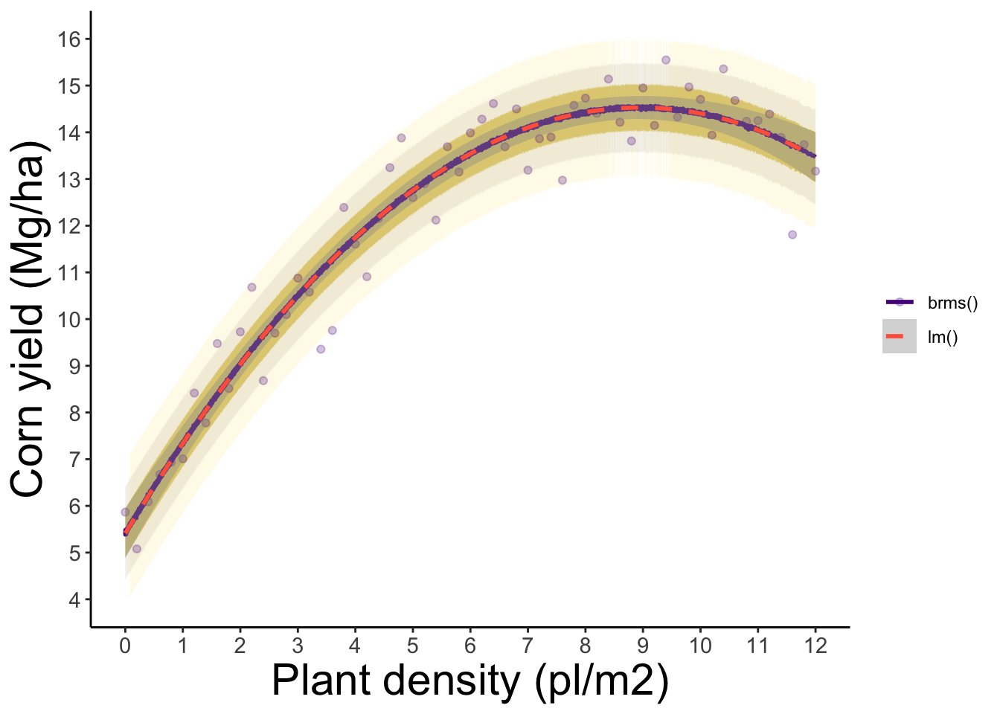
5 rstan: Full Control with Stan
🔗 Docs: https://mc-stan.org/rstan/
🐛 Issues: https://github.com/stan-dev/rstan/issues
Stan is a powerful, high-performance platform for Bayesian modeling, using: - Hamiltonian Monte Carlo (HMC) - No-U-Turn Sampler (NUTS)
Unlike brms, Stan requires writing the full model — offering full flexibility and speed.
✨ brms can even show the Stan code it generates under the hood!
Stan also supports Python, Julia, MATLAB, and more.
6 rjags: Just Another Gibbs Sampler
🔗 Docs: https://mcmc-jags.sourceforge.io/
🐛 Issues: https://sourceforge.net/projects/mcmc-jags/
rjags uses the classic Gibbs Sampling approach and the BUGS model syntax (used in WinBUGS, OpenBUGS).
- More manual than
brms - Ideal for users who want to write the full statistical model
- Often paired with the
codapackage for diagnostics
Happy Bayesian coding! 💻✨